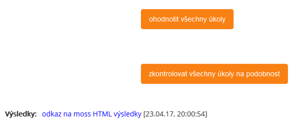

Práce s pluginem
OBSAH
- Nastavení pluginu,
- spuštění ohodnocení,
- výsledky,
- hromadné funkce.
1 - Nastavení pluginu
Učitelské testy
Java úkol disponuje stejným nastavením jako plugin assign, na kterém je Java úkol postaven. Rozdílem oproti pluginu assign je ten, že se v nastavení nachází o jeden drag&drop element navíc. Ten slouží k předání učitelských testů pluginu. Učitel tyto své testy může vložit již při vytváření nové isntance Java úkolu nebo kdykoli po vytvoření. Je ale nutné si pamatovat, že bez poskytnutých učitelských testů nebude fungovat autimatizované ohodnocení domácích úkolů.
Učitelské testy se mohou odevzdávat ve formě ZIP souboru, který obsahuje JAR soubor nebo pouze JAR soubor nebo celý projekt (Netbeans, Eclipse, atp.), a to jak celou složku nebo zabalený v ZIP souboru. Vždy je pouze nutné, aby byl přítomen JAR soubor.

Obrázek: Drag&drop element k odevzdání učitelských testů.
Bodování
Java úkol vyžaduje, aby bylo u známkování vybráno bodování. Automatizované ohodnocení domácích úkolů pracuje pouze se 2 variantami vyhodnocení. Buďto domácí úkol splnil všechny části testů a dostane maximální počet bodů nebo neuspěje alespoň v jedné části testů a dostane minimální počet bodů. Jaké hodnoty maxima a minima budou anstaveny, nehraje roli. Co však musí být nastaveno, je hodnota minimálního počtu bodů, které musí student získat, aby byl jeho domácí úkol označen za splňený. Plugin s touto hodnotou sice nepracuje, bez ní ale správně nefunguje ohodnocení, protože výchozí hodnota minimálního počtu bodů k úspěchu je 0 bodů a pokud by studentův domácí úkol neuspěl v testech, dostal by sice minimální možný počet bodů, tedy 0, ale i to by bylo vyhodnoceno jako úspěšný pokus, protože 0 bodů je přesně tolik, aby byl domácí úkol označen za úspěšný. Tato hodnota tedy musí být větší než 0.
Podmínky odevzdání domácích úkolů
Nepoužívat nastavení "Požadovat, aby studenti klikli na tlačítko Odeslat"! Plugin v takovém případě nebude fungovat korektně.
2 - Spuštění ohodnocení
Automatizované ohodnocení domácího úkolu se spouští tak, že student odevzdá svůj domácí úkol. Pokud je v nastavení Java úkolu vybráno, aby student nejprve potvrdil odevzdání svého domácího úkolu, spustí se automatizované ohodnocení až poté, co student potvrdí odevzdání. Ihned po odevzdání domácího úkolu se spustí automatizované ohodnocení a student během pár vteřin vidí známku a výsledky dílčích testů.
- Pokud je Java úkol nastaven tak, že se autimaticky otevře další pokus, dokud student neuspěje, bude po udělení známky a feedbacku otevřen další pokus.
3 - Výsledky
Výsledky z automatizovaného ohodnocení domácího úkolu, tedy výsledky dílčích testů, jsou zobrazeny jako feedback (komentář) učitele u známky. Ne vždy bude zobrazeno jméno učitele, protože se vždy bere jméno toho uživatele, který byl v dobu vyvolání automatizovaného ohodnocení zrovna přihlášen. Pokud tedy student odevzdá domácí úkol, tím spustí automatizované ohodnocení tohoto domácího úkolu, bude jako autor známky uveden student. Pokud by učitel použil tlačítko na hromadné ohodnocení domácích úkolů, bude u všech ohodnocených úkolů zobrazeno jeho jméno, protože učitel byl v danoudobu přihlášený uživatel. Výsledný feedback je stylován do jednoduché tabulky, kterou vidíme na obrázku:

Obrázek: Výsledek automatizovaného ohodnocení domácího úkolu ve formě feedbacku a udělené známky.
4 - Hromadné funkce
Učitel má také možnost spustit automatizované ohodnocení domácích úkolů pro všechny studenty naráz. Ohodnoceni budou samozřejmě pouze studenti, kteří odevzdali domácí úkol. Další hromadnou funkcí je kontrola na podobnost zdrojových kódů, kterou provádí MOSS. Obě funkce se spouštějí pomocí příslušného tlačítka. Obě tyto tlačítka se nachází v sekci "Zobrazit/hodnotit všechny odevzdané úkoly" a lze je nalézt ve spodní části stránky. Pod tlačítkem pro kontrolu podobnosti kódů se zobrazí výsledek této kontroly (URL odkaz). Kontrola na podobnost kódů nijak neovlivňuje hodnocení!

Obrázek: Tlačítka pro spuštění hromadných funkcí.